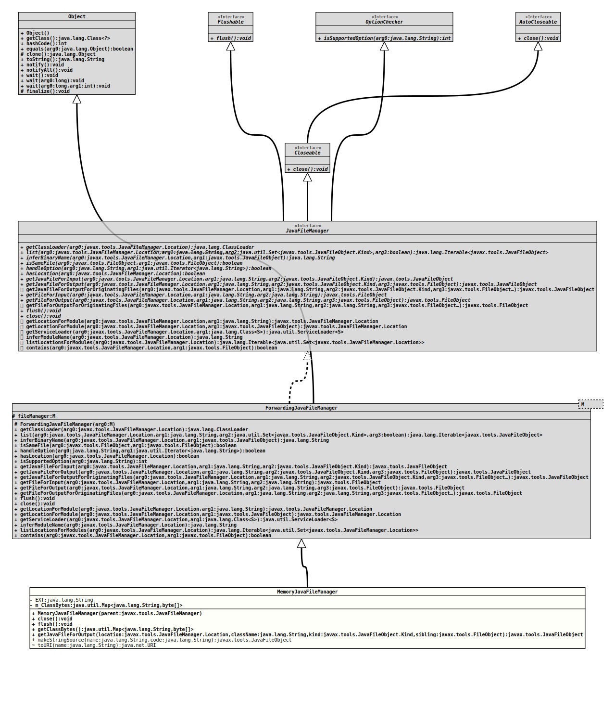

Class MemoryJavaFileManager
java.lang.Object
javax.tools.ForwardingJavaFileManager<JavaFileManager>
org.tquadrat.foundation.scripting.internal.MemoryJavaFileManager
- All Implemented Interfaces:
Closeable,Flushable,AutoCloseable,JavaFileManager,OptionChecker
@ClassVersion(sourceVersion="$Id: MemoryJavaFileManager.java 1070 2023-09-29 17:09:34Z tquadrat $")
@API(status=INTERNAL,
since="0.0.5")
public final class MemoryJavaFileManager
extends ForwardingJavaFileManager<JavaFileManager>
An implementation of
JavaFileManager
that keeps compiled .class bytes in memory.- Author:
- A. Sundararajan
- Modified by:
- Thomas Thrien (thomas.thrien@tquadrat.org)
- Version:
- $Id: MemoryJavaFileManager.java 1070 2023-09-29 17:09:34Z tquadrat $
- Since:
- 0.0.5
- UML Diagram
-

UML Diagram for "org.tquadrat.foundation.scripting.internal.MemoryJavaFileManager"
{kind=link}
-
Nested Class Summary
Nested ClassesModifier and TypeClassDescriptionprivate classA file object that stores Java byte code into the classBytes map.private static classA file object used to represent Java source coming from a string.Nested classes/interfaces inherited from interface javax.tools.JavaFileManager
JavaFileManager.Location -
Field Summary
FieldsModifier and TypeFieldDescriptionprivate static final StringJava source file extension: ".java".The byte code that is stored by this file manager instance.Fields inherited from class javax.tools.ForwardingJavaFileManager
fileManager -
Constructor Summary
ConstructorsConstructorDescriptionMemoryJavaFileManager(JavaFileManager parent) Creates a newMemoryJavaFileManagerinstance. -
Method Summary
Modifier and TypeMethodDescriptionfinal voidclose()final voidflush()
This implementation does nothing.Returns the classes that are hold in memory.final JavaFileObjectgetJavaFileForOutput(JavaFileManager.Location location, String className, JavaFileObject.Kind kind, FileObject sibling) static final JavaFileObjectmakeStringSource(String name, String code) Creates aJavaFileObjectfrom the given arguments that will use as the input tojavac.(package private) static URITranslates the given name to anURI.
If an error occurs, the default "mfm:///org/tquadrat/script/java/java_source" will be returned.Methods inherited from class javax.tools.ForwardingJavaFileManager
contains, getClassLoader, getFileForInput, getFileForOutput, getFileForOutputForOriginatingFiles, getJavaFileForInput, getJavaFileForOutputForOriginatingFiles, getLocationForModule, getLocationForModule, getServiceLoader, handleOption, hasLocation, inferBinaryName, inferModuleName, isSameFile, isSupportedOption, list, listLocationsForModules
-
Field Details
-
EXT
Java source file extension: ".java".- See Also:
-
m_ClassBytes
The byte code that is stored by this file manager instance. The name of the class is the key to the map, the value is the byte code of that class.
-
-
Constructor Details
-
MemoryJavaFileManager
Creates a newMemoryJavaFileManagerinstance.- Parameters:
parent- The parent file manager.
-
-
Method Details
-
close
- Specified by:
closein interfaceAutoCloseable- Specified by:
closein interfaceCloseable- Specified by:
closein interfaceJavaFileManager- Overrides:
closein classForwardingJavaFileManager<JavaFileManager>- Throws:
IOException- See Also:
-
flush
This implementation does nothing.- Specified by:
flushin interfaceFlushable- Specified by:
flushin interfaceJavaFileManager- Overrides:
flushin classForwardingJavaFileManager<JavaFileManager>- Throws:
IOException- See Also:
-
getClassBytes
Returns the classes that are hold in memory.- Returns:
- The classes.
-
getJavaFileForOutput
public final JavaFileObject getJavaFileForOutput(JavaFileManager.Location location, String className, JavaFileObject.Kind kind, FileObject sibling) throws IOException - Specified by:
getJavaFileForOutputin interfaceJavaFileManager- Overrides:
getJavaFileForOutputin classForwardingJavaFileManager<JavaFileManager>- Throws:
IOException
-
makeStringSource
Creates aJavaFileObjectfrom the given arguments that will use as the input tojavac.- Parameters:
name- The file name of the source file.code- The source code itself.- Returns:
- The result source file.
-
toURI
Translates the given name to anURI.
If an error occurs, the default "mfm:///org/tquadrat/script/java/java_source" will be returned.- Parameters:
name- The name to translate.- Returns:
- The newly generated URI.
-